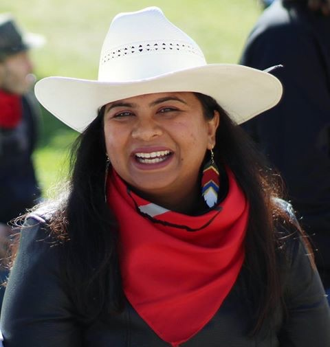

Where Are You Originally From?
My name is Saima Jamal, and I live in Calgary, Alberta. I am a co-founder of the Calgary Immigrant Support Society, and have been a social activist, community organizer, humanitarian, and volunteer social worker for many years.
My experiences over my years of community work make me believe that I have a very thick skin, and it is not easy for people to make me angry when we speak in person. However, a recent experience made me realize that there are certain things which I remain very sensitive to.
While attending an event, I was being introduced to someone whom I had never met before (an older white male). After the initial greeting, the first question which I was asked was, “Where are you from?” - this question caught me off guard, and being taken aback I stumbled over my response, finally saying “I am Canadian, I suppose from Calgary” since I live in a town just outside of there. This answer apparently was not satisfactory, because he then asked me “Where are you ORIGINALLY from?”
My mind started to spin with many thoughts at once. Was my occasional accent coming out? Does this man realize how inappropriate his line of questioning is? Should I take out my phone and show him a recent viral video of a female Asian jogger being asked this question repeatedly, to drive home the point? As I pondered my options, the man stood there eagerly awaiting my answer, with his face seeming to get redder by the moment as he awaited my answer. Finally, after collecting my thoughts, I said “Well I am originally from Bangladesh.”
This was apparently the answer he was looking for. He nodded in agreement, and I hoped that he would then tell me some memory of Bangladesh or an interesting thing that he had learned about it as many others have done in the past. Instead, he started talking about his son going to a neighbouring country for an internship. Although I tried to focus on the story he was telling, inside I felt sick. What is it about me that doesn’t make me Canadian?
I am proud of my roots. I am proud of my South Asian heritage, and of my Muslim heritage, and both of these are core parts of my identity. But I am also proud of being a Canadian, and it is an equally core part of my identity. It is 2019 - what is it about the colour of my skin that causes others to question whether I am a Canadian??
Lest you think that it is only white people that do this, it is not. I have become well-known for my work with Syrian newcomers to Canada, and because of my brown skin they will often ask me the same question: “Which country are you from?” However, the same question is almost never asked of white-skinned volunteers who visit, and I can only assume that they believe without question that he or she is Canadian and see no need to ask further. The end result is that I am called Bangladeshi, and they are called Canadian.
This hurts, and it needs to stop. Those that know me personally know that I hate nationalism and consider myself to be a global citizen. So when I hear these frequent attempts to put me into a box based solely on the colour of my skin, I hear racism at work. You may not realize you are doing it, and you may consider it to be an innocent conversation, but it hurts me deeply because it implies to me that you believe I must not actually be a Canadian. The moment you see me as the “other” and as non-Canadian, I believe you also automatically lower your sense of respect for me. Everyone deserves respect regardless of the colour of their skin or the country of their birth - this is one of the main cornerstones of being Canadian, and I hope you remember that (and my story) the next time you meet another person of colour!
--
Saima Jamal
Calgary, AB
